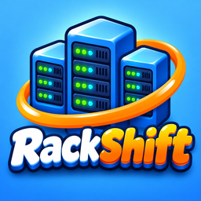

RackShift: Data Center Tycoon: Privacy Policy
Effective date: 16 November 2026.
The short version
The game itself collects no personal data: there are no accounts, no analytics tools and no servers of its own. Your progress stays on your device. The only data leaving the game goes to the advertising partners that serve the optional sponsor videos, and to Apple if you use Game Center.
What stays on your device
Your progress, save slots and settings are stored only on your iPhone or iPad. Deleting the game deletes them.
Optional sponsor videos (rewarded ads)
After the first chapter the game offers sponsor videos that you may choose to watch for a small bonus. They are never shown on their own. They are served through Unity LevelPlay (ironSource Ads) and Unity Ads. To show ads, measure them and prevent fraud, these partners collect data from your device, such as:
- device identifiers: the advertising identifier (IDFA) only if you allow tracking, and an identifier for this app;
- coarse location derived from the IP address;
- device and connection details (model, operating system, language, screen, network);
- ad interactions and performance and diagnostic data of the ads.
The partners process this data under their own privacy policies: Unity: game player and app user privacy policy, Unity privacy policy and ironSource privacy policy.
Your choices
- Tracking: the game asks Apple's tracking question once, after a short explanation. If you decline, ads are not personalised; nothing in the game changes. You can change it any time in iOS Settings > Privacy & Security > Tracking.
- Personalised ads: where the law asks for it (for example the EU/EEA, the UK, Switzerland and Turkey) the game asks whether sponsor messages may be personalised. Change it any time in the game: Settings > Privacy choices.
- No ads at all: simply do not tap the sponsor buttons. The whole game can be played without them.
Apple services
Game Center (optional): if you are signed in, your company value and achievements go to Apple's Game Center under Apple's Privacy Policy. The game does not store your Game Center identity.
Crash reports: if you chose in iOS Settings to share analytics with app developers, Apple may give the developer anonymous, aggregated statistics and crash reports.
Children
The game is for a general audience and is not directed at children. Ads are not set up as child-directed.
Changes
If a future version changes any of this, this policy and the App Store privacy label will be updated before that version is released.
Contact
Questions about privacy: open a request.
RackShift: Data Center Tycoon: Gizlilik Politikası
Yürürlük tarihi: 16 Kasım 2026.
Kısaca
Oyunun kendisi hiçbir kişisel veri toplamaz: hesap yok, analiz aracı yok, oyunun kendine ait bir sunucusu yok. İlerlemen cihazında kalır. Oyundan dışarı çıkan tek veri, isteğe bağlı sponsor videolarını sunan reklam ortaklarına ve Game Center kullanıyorsan Apple'a gider.
Cihazında kalanlar
İlerlemen, kayıt yuvaların ve ayarların yalnızca iPhone veya iPad'inde saklanır. Oyunu silersen bunlar da silinir.
İsteğe bağlı sponsor videoları (ödüllü reklamlar)
İlk bölümden sonra oyun, küçük bir bonus karşılığında izlemeyi seçebileceğin sponsor videoları sunar. Hiçbiri kendiliğinden açılmaz. Bu videolar Unity LevelPlay (ironSource Ads) ve Unity Ads üzerinden sunulur. Reklam göstermek, ölçmek ve dolandırıcılığı önlemek için bu ortaklar cihazından şu tür veriler toplar:
- cihaz tanımlayıcıları: reklam kimliği (IDFA) yalnızca takibe izin verirsen, ve bu uygulamaya özel bir tanımlayıcı;
- IP adresinden çıkarılan yaklaşık konum;
- cihaz ve bağlantı bilgileri (model, işletim sistemi, dil, ekran, ağ);
- reklam etkileşimleri ile reklamların performans ve tanılama verileri.
Ortaklar bu verileri kendi gizlilik politikalarına göre işler: Unity oyuncu ve uygulama kullanıcısı gizlilik politikası, Unity gizlilik politikası ve ironSource gizlilik politikası.
Seçimlerin
- Takip: oyun kısa bir açıklamadan sonra Apple'ın takip sorusunu bir kez sorar. Reddedersen reklamlar kişiselleştirilmez; oyunda hiçbir şey değişmez. İstediğin zaman iOS Ayarlar > Gizlilik ve Güvenlik > Takip'ten değiştirebilirsin.
- Kişiselleştirilmiş reklamlar: yasaların gerektirdiği yerlerde (örneğin AB/AEA, Birleşik Krallık, İsviçre ve Türkiye) oyun, sponsor mesajlarının kişiselleştirilip kişiselleştirilmeyeceğini sorar. İstediğin zaman oyunda Ayarlar > Gizlilik tercihleri'nden değiştirebilirsin.
- Hiç reklam istemiyorsan: sponsor düğmelerine dokunmaman yeterli. Oyunun tamamı onlarsız oynanır.
Apple hizmetleri
Game Center (isteğe bağlı): giriş yaptıysan şirket değerin ve başarımların Apple'ın Gizlilik Politikası kapsamında Apple'ın Game Center'ına gider. Oyun Game Center kimliğini saklamaz.
Çökme raporları: iOS Ayarları'nda analizleri uygulama geliştiricileriyle paylaşmayı seçtiysen Apple, geliştiriciye anonim ve toplu istatistikler ile çökme raporları verebilir.
Çocuklar
Oyun genel kitleye yöneliktir, çocuklara yönelik değildir. Reklamlar çocuklara yönelik olarak ayarlanmamıştır.
Değişiklikler
Gelecekteki bir sürüm bunlardan birini değiştirirse, bu politika ve App Store gizlilik etiketi o sürüm yayınlanmadan önce güncellenir.
İletişim
Gizlilikle ilgili soruların için: talep aç.